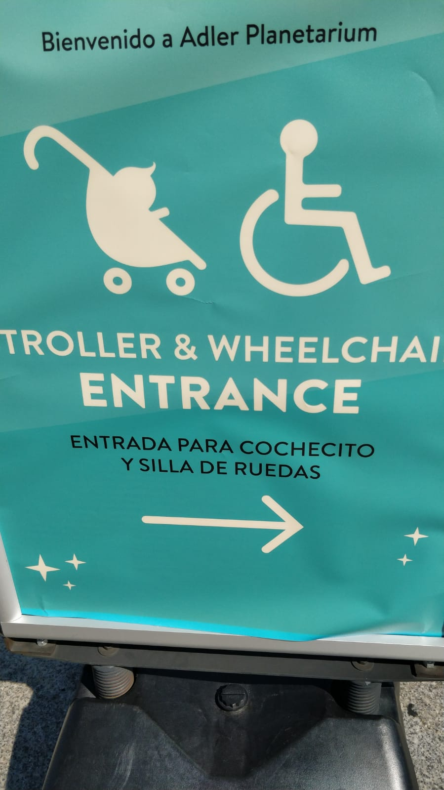
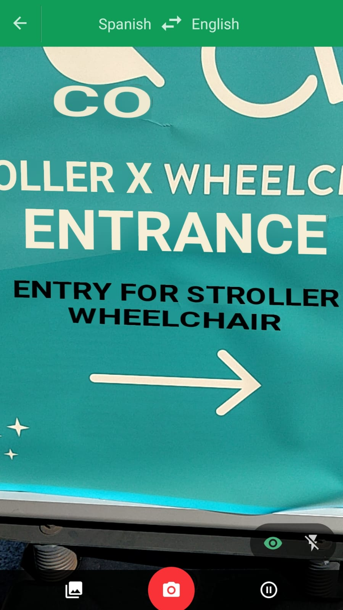
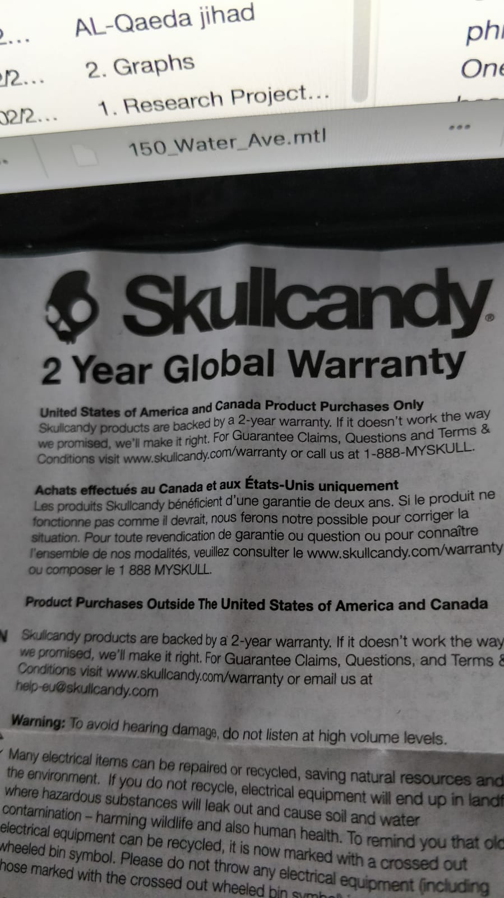
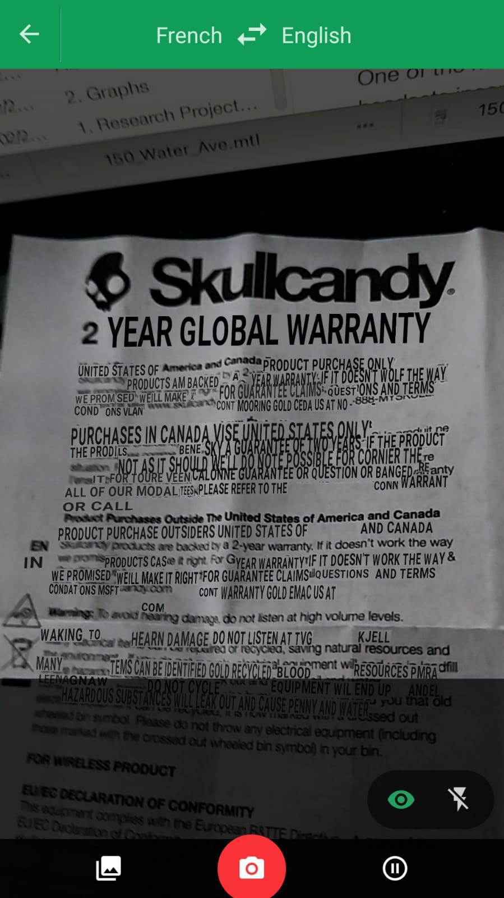
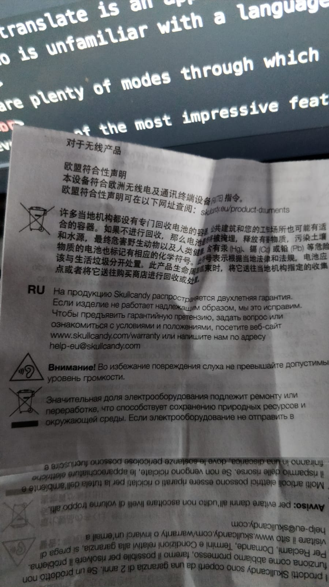
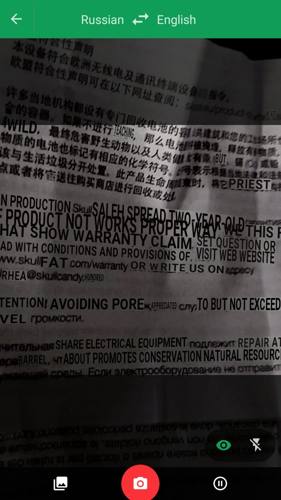

Pros and Cons of Google Translate
Google Translate
 
Spanish to Engligh Translation
 
French to Engligh Translation
 
Russian to Engligh Translation
Overview
Google translate is an application that I used to translate words, phrases and sentences from one language to another. In this era, travelling to different countries and cities is extremely easy and common. Due to this increase in interest for travel, there is a fundamental need for people to understand the world's languages. This is where Google translate comes in. It gives users the capability of translating text from a language to any of the 100s of languages Google offers. A person who is unfamiliar with a language can translate it into a language he is comfortable with.
There are plenty of modes through which Google translate can be used. The first of which is the text mode. Once the languages are selected, any text written in the language specified will be translated into the second language. The other modes include audio where the audio is converted into text first and then translated into the language to be translated into. Google also provides an option where a particular handwriting can be translated.
However, one of the most impressive features of Google translate is the augmented reality option to translate text. When a particular text is aligned within the space given while viewing through the camera, the augmented reality part of the application recognizes the text and converts it in real time into the specified language. Google not only translates the words but also retains the font and color of the text that was to be converted.
Pros
One of the biggest advantages of Google Translate is to help users stay familiar in an unfamiliar environment. Especially with the Augmented Reality plug-in, user’s will be able to travel to new destinations and never face the language barrier. With the augmented reality function, they will be able to read signs and other text in their own language. Right now, the text needs to be viewed through a phone which does not give an immersive or real feeling. However, with an increase in the usage of VR and AR headsets, this problem can be solved. The immersion can allow a person to visit new places but be able to read everything in your own language. It will also help people understand everything in their surroundings irrespective of which language it is. It is impressive to see that translation is not only syntactically correct but is also semantically correct to a certain extent. Sentences are traslated accurately and in a grammatically correct manner. Also, the application does more than just transalte languages that have same letters as the english language. I was amazed to see that translation function could be used for languages like Russian.
Cons
Firstly, this application is a hindrance since it will curb people’s motivation to learn new languages. Right now, when people travel to new places, they are required to learn at least some words or phrases required to survive. However, if apps like Google Translate are in the picture, this language sharing will become extremely limited. In terms of the application itself, the augmentation is impressive but jittery and not stable which reduces from the immersion. I also noticed that the augmented reality Google Translate works well for some languages and not so well for other languages. When I tried to scan text in Japanese, Google Translate was not able to identify any of the words or phrases. Languages like Spanish and French translate easily and accurately. One of the most exciting parts of travelling is the ability to see new places and experience something unfamiliar. If AR headsets incorporate Google Translate, people will not get the same exciting feeling of being in someplace new. Another disadvantage of this will be the fact that many people will use it as a substitute to learning a language. This is not the correct approach to learning a language because the translated text is not always grammatically correct.
How much control?
I think it is important to give as much control to the user as possible when it comes to deciding how much of the real world is synthetic. This is because in the age of free will and independence, it is hard to generalize everyone into the same batch or category. Therefore, the users should be able to decide how much of their perception of the real world is artificial. However, I think it would be necessary to have an upper threshold for the amount of reality converted to synthetic. The ability to escape into a synthetic world might encourage people to perform deeds that are deemed harmful or intolerated in the real world.